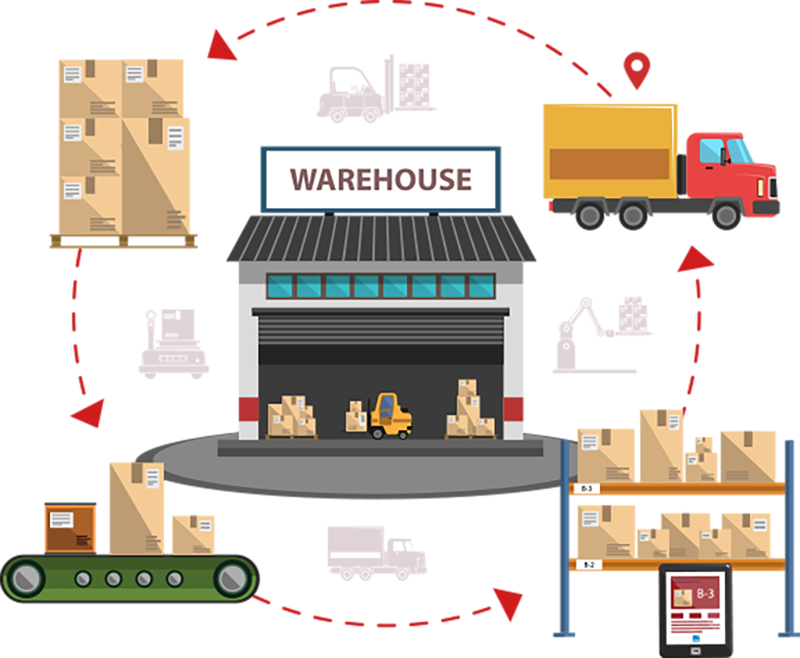
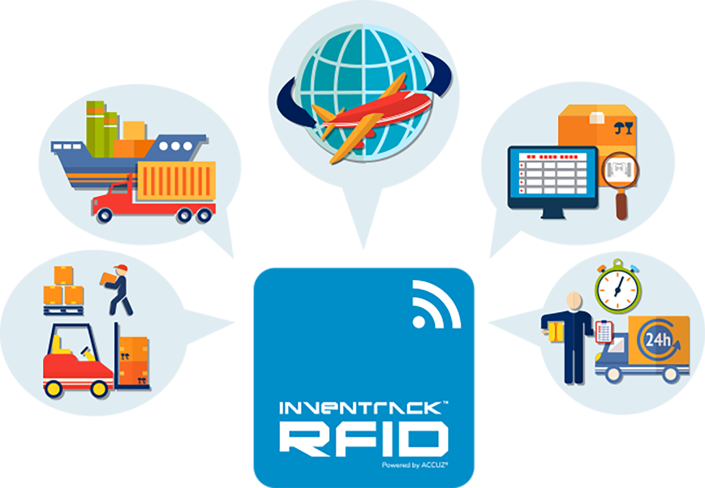
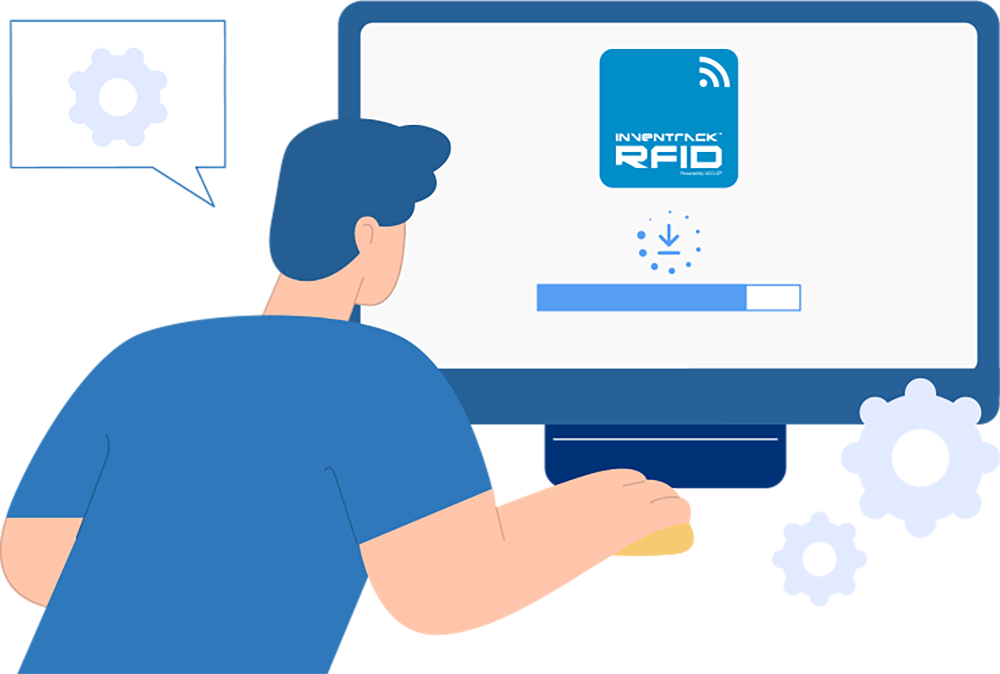
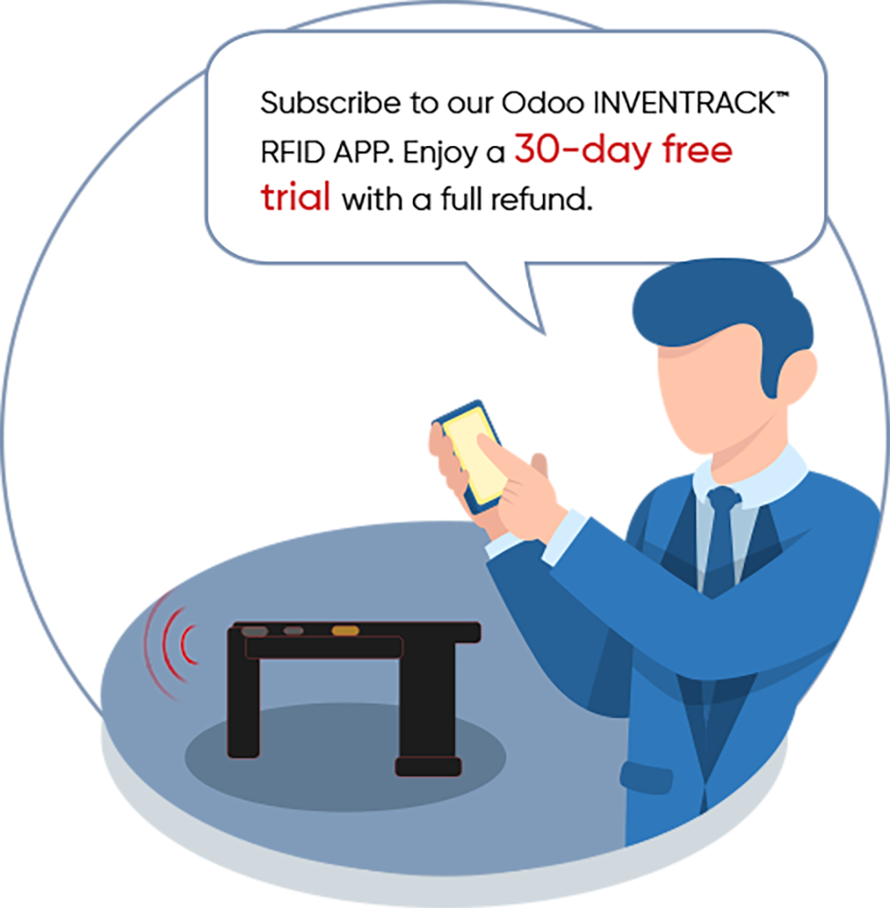

A suite of RFID add-on Apps for Odoo, to serve different needs.
Odoo InvenTrack™ RFID WMS is a professional RFID-enabled inventory and warehouse management application designed especially for Odoo.
By integrating UHF RFID technology, handheld or fixed RFID readers, and intelligent EPC data management, it enables real-time, highly accurate, and automated inventory operations.

Odoo InvenTrack™ RFID WMS transforms traditional barcode-based or manual inventory processes into a fully automated, RFID-driven workflow, covering everything from EPC data management to: Inbound,
Outbound,Internal transfers,Inventory adjustments,Intelligent locating

1. Download the Odoo INVENTRACK™ RFID WMS to your Odoo server.

2.1 If you have an Android UHF RFID Reader:

2.2 If you have an Android UHF RFID Reader:
Explore our video series to help you make the most of Odoo InvenTrack™ RFID's features. These videos will guide you through key functionalities, daily operations, and best practices—from RFID setup and inventory tracking to real-time data management and workflow optimization.